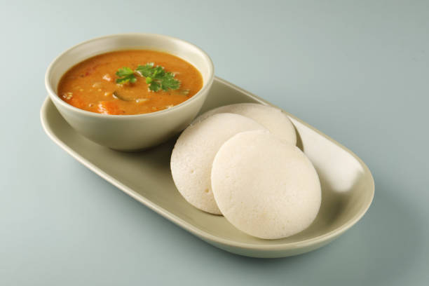

Idli Sambar Recipe

Idli Sambar is a classic South Indian breakfast of soft, steamed rice-and-lentil cakes served with a tangy, vegetable-laden lentil stew. It is light, wholesome, and traditionally enjoyed with coconut chutney.
Ingredients
- 2 cups idli batter (fermented rice and urad dal)
- 1 cup toor dal (split pigeon peas)
- 2 cups mixed vegetables, chopped
- 2 tbsp sambar powder
- 1 tbsp tamarind pulp
- 1 tsp mustard seeds
- A few curry leaves
- Salt, to taste
Steps
- Pour the fermented batter into greased idli molds and steam for 10-12 minutes until fluffy.
- Boil the toor dal until soft, then mash it smooth.
- Cook the vegetables with tamarind pulp and sambar powder, then add the dal and simmer.
- Temper the mustard seeds and curry leaves in hot oil and stir into the sambar.
- Serve the hot idlis with the sambar and coconut chutney.
Back to Home